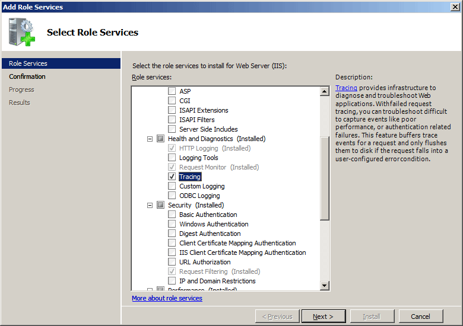
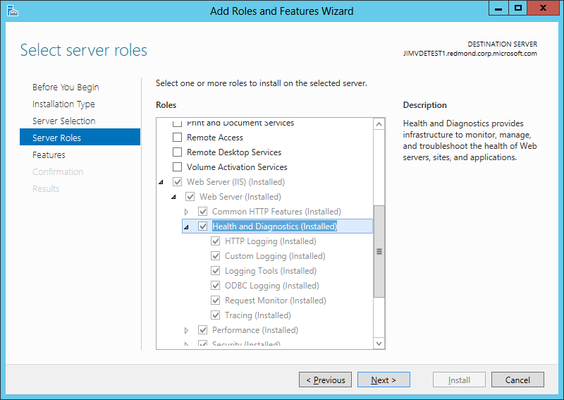

Introduction to Failed Request Tracing
IIS Troubleshooting Made Easy
Created by Rohith Rajan / @debuggingio
What is Failed Request Tracing(also called FREB)
provides a way to determine what exactly is happening with your requests inside IIS and ASP.NET and why
What is FREB ?
- An XML file generated on the server
- Generated at C:\inetpub\logs\FailedReqLogFiles
- Viewed using Internet Explorer
- Needs accompanying XSLt stylesheet freb.xsl
Prerequisites
- Make sure Tracing is installed
WINDOWS VISTA / 7 / 8 -Control panel -> Programs and Features -> Turn on Windows Features on or off.

WINDOWS SERVER 2008 / 2008 R2

WINDOWS SERVER 2012
Server Manager, click Manage, and then click Add Roles and Features.- > Server Roles page, select and open Web Server (IIS), Web Server, and Health and Diagnostics. Select Tracing,

Enable Failed Request Tracing
using IIS Server Manager GUI (on standalone server)
IIS Manager(inetmgr.exe) -> Connections Pane ->Expand Machine Name->Expand Sites ->Select the Website you want to configure
In the Actions Pane ->Configure ->Failed Request Tracing

Configure Failure Definitions
IIS Manager(inetmgr.exe) -> Connections Pane ->Expand Machine Name->Expand Sites ->Select the Website you want to configure
Double-click Failed Request Tracing Rules.

Add Rule definition for 200 status code

Click Next ->select Status code(s) and enter 200

Click Next and click Finish and you will see Following definition for you website

Test and View the Failure Request Log File
- Browse to any page on your website
- Now that you have generated a failed request, in windows explorer navigate to %systemdrive%\inetpub\logs\FailedReqLogFiles\W3SVC1.
-

- The folder which the trace file is generated is according to your website's ID
- Your website's ID can be found by going to IIS Manager(inetmgr.exe) -> Connections Pane ->Expand Machine Name->Click Sites
-

View the Generated File
Right-click the log file for th error, and click Open With -> Internet Explorer. If this is the first time that you are opening a Failed Request Tracing file, you must add about:internet to the list of trusted sites, since Internet Explorer's Enhanced Security Configuration is enabled by default. If this is the case, you will see the following:

View the failed request trace as shown